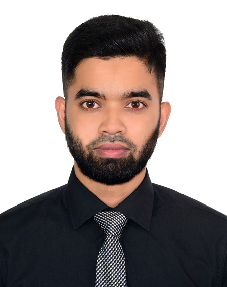

Graduate Teaching Assistant
Department of Mechanical Engineering · KFUPM, Saudi Arabia
MSc Mechanical Engineering researcher at King Fahd University of Petroleum & Minerals (KFUPM), with experience in engineering education, program coordination, steel manufacturing training, and technical analysis.

I am a mechanical engineering graduate currently pursuing an MSc at KFUPM. My experience includes industrial training in steel manufacturing at Bangladesh Steel Re-Rolling Mills (BSRM), engineering education and program coordination, and military service in the Bangladesh Navy.
My technical background includes ANSYS Fluent and finite element analysis, SolidWorks, COMSOL Multiphysics, and computational tools. My research interests include energy harvesting, energy materials, solid-state batteries, and perovskite solar cells.
I am interested in both academic research collaborations and engineering industry opportunities.
Topics listed in my CV and reflected in my scholarly work.
Research interest in energy harvesting applications, performance factors, and deployment challenges.
Solid-state batteries, cathode materials, and energy-storage research.
Research interest in photovoltaic energy materials and related technologies.
Department of Mechanical Engineering · KFUPM, Saudi Arabia
Department of Mechanical Engineering · City University, Dhaka, Bangladesh
Defense Guide ISSB Coaching Center · Dhaka, Bangladesh
Bangladesh Navy · Served aboard Navy ships; training included two years at Bangladesh Naval Academy.
Bangladesh Steel Re-Rolling Mills (BSRM) · Chittagong, Bangladesh
Observed billet production, rolling and bending, cooling-bed operations, universal testing machine workflows, furnace and shearing equipment, and industrial maintenance processes.
King Fahd University of Petroleum & Minerals (KFUPM), Saudi Arabia
CGPA: 3.719/4.00 (as stated in the provided CV)
City University, Dhaka, Bangladesh
CGPA: 3.78/4.00 (as stated in the provided CV)
Academic background: Completed the first 37.5 credits at Military Institute of Science and Technology (MIST) and the remaining 117.5 credits at City University as part of the same bachelor's degree.
Certificate of Completion · King Fahd University of Petroleum and Minerals (KFUPM)
Hasan, A., Abdullah, M. & Khater, M. E. · Int. J. Dynam. Control, 14, 214 (2026).
Hasan, A. A., Abdullah, M., & Sazid, A. S. (2025). Heat Transfer, 54(2), 1462–1475.
Abdullah Al Hasan & Md. Shamim Rayhan (2023). International Journal of Engineering Trends and Applications, 10(3), 1–6.
Z. Ahsan, A. A. Hasan, S. Islam, S. Saha, A. M. S. Iqbal, and M. S. Rayhane. In Abstracts of Accepted Papers, Applied Intelligence and Informatics (AII) 2025, Washington, DC, USA, October 2025.
A. A. Hasan, A. Bilal, P. C. Anyanwu, & A. Abdulrahman. Listed as accepted in the supplied CV; publication status has not been independently confirmed.
M. Abdullah, A. A. Hasan, M. A. Shadab.
A. A. Hasan, S. Akhtar, M. E. Khater. Submitted to a Q2 journal, as stated in the CV; not described as accepted or published.
W. Billah, M. A. Shadab Siddiqui, M. A. Aman, A. A. Hasan, M. S. Hossain, S. Mahmud. Submitted to the LLM Hackathon for Applications in Materials Science & Chemistry, 2025 (Team 4 KFUPM).
Microcontroller project on measuring ship depth in shallow water, completed at Military Institute of Science and Technology (MIST).
Co-authored “Catalyst Assistant,” submitted to the 2025 LLM Hackathon for Applications in Materials Science & Chemistry (Team 4, KFUPM). See Scholarly Work for the contributor list.
Mentor of MESACU (Mechanical Engineering Students Association of City University), February 2023 – May 2024.
Project photos, CAD renders, and experiment results can be added when provided.
Open to conversations about mechanical engineering, research collaboration, and industry opportunities.
Email: alhasankanon43@gmail.com
LinkedIn: linkedin.com/in/aahasan1994/ ↗
Google Scholar: Google Scholar profile ↗
A downloadable CV can be added once a reviewed PDF version is available.